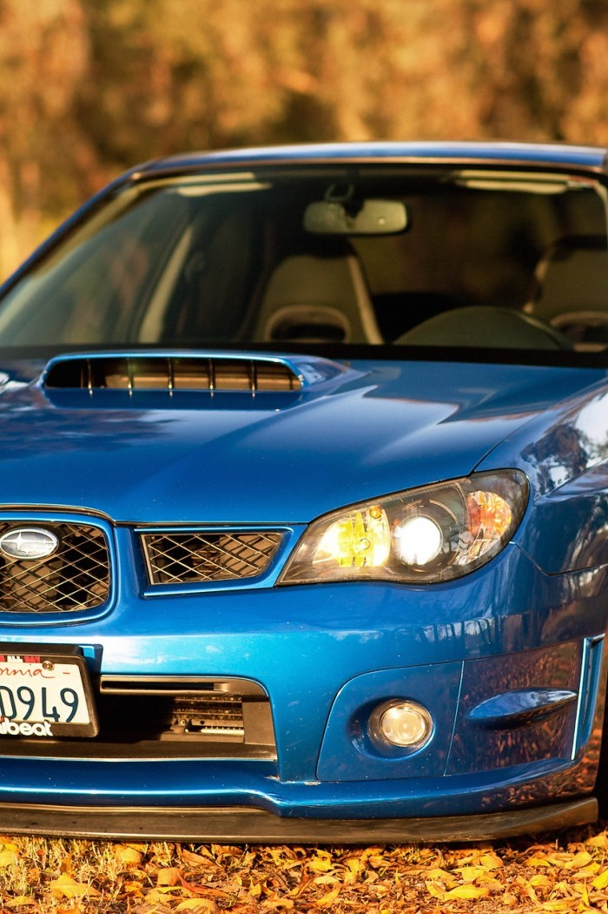

What is SUBARU?
If you ask motorsports fans around the world about the one car which would be
a synonym for rally racing, Subaru Impreza would surely be among the top 5 answers, if not the number 1
in most cases.
Subaru cars are known for their use of a boxer engine layout
in most vehicles above 1500 cc. The Symmetrical All Wheel Drive drive-train layout was introduced in 1972.
Both became standard equipment for mid-size and smaller cars in most markets by 1996.
The lone exception is the BRZ, introduced in 2012 via a partnership with Toyota, which pairs the
boxer engine with rear-wheel-drive. Subaru also offers turbocharged versions of their passenger cars,
such as the WRX, Legacy and Outback XT, Ascent, and formerly the Legacy GT and Forester XT.
The phenomenal success of the Prodrive-built Impreza 555 in the world rally arena
spawned a multitude of limited production models for the Japanese domestic market from Fuji Heavy
Industries Ltd., maker of Subaru automobiles. They all had a strong rallying theme with the use of
two unique colors, mirroring the WRC liveries of the day, and various rally-oriented upgrade parts
to set them apart.

1JZ: One of the best and forgotten engines ever made
At the heart of EVERY Subaru is the Subaru Boxer Engine; named for
the horizontal movement of the pistons - much like boxers throwing punches.
For over 45 years Subaru has been solely committed to the Subaru Boxer
Engine in ALL of their models. The innovative design is part of Subaru's core
DNA. Why don't other manufacturers use it? Porsche does in a few of their models
including the Boxster, Cayman and 911 models. Porsche states, "This flat, short
design results in a very low center of gravity and extremely smooth running."
See Boxer Engine in Action

{kind=link}